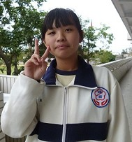
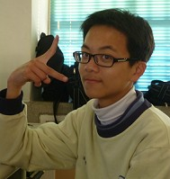
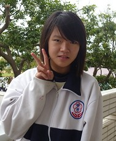
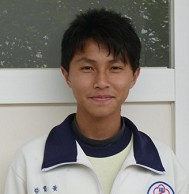
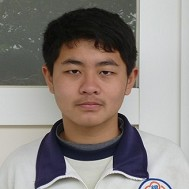
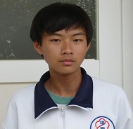
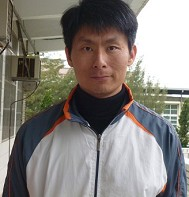

|
|
About Us > Afterthoughts

Captain:
Hsing-hui Chen
|
From the day we formed the team to participate up until now, with our accomplishments, I have grown up a lot. In the beginning, members voted for me to be the captain, but I was lazy, and did not have an aggressive reaction to any work the teacher assigned to me. One day, after we finished the meeting, member Kuan-che said we needed to contact Teacher Huang, and he did it on the same day. I suddenly woke up and noticed that I was so unfit for the captain position. I then started to think about how to plan seriously. The instructor gradually recognized my efforts since then. From planning to proceeding with interviews and distributing work to organize data, I learned the importance of “helping one other”. For example, in the first week of winter break, one member got seriously sick, so other members immediately shared his original responsibility of taking photographs. Because they had lost one person, they had to work harder to search for information and make webpages.
The most difficult part for me, in this competition, was the interview. We needed to prepare work before the interview, and setting up questions was the first worry. Besides, producing an interview script and time scheduling needed to be prepared as well. I was not familiar with interviewing, and often found out that the answers from interviewees were different from what we expected. The interview sometimes branched out and moved away from the topic we brought in. We finally overcame these difficulties and completed our mission. An affirmation to myself is what I got from this procedure. |

Team member:
Shao-hsun Yen
|
Internet Fair” was a strange terminology to me before the competition. Of course, all steps for this competition including planning, preparation, interviewing and visiting, were new tests and challenges that I have never experienced before. These trainings helped me grow in data management, crisis management, and interviewing methods. These cannot be resolved by walking through them. Eight of us worked together to break through all difficulties. With help from team members and teachers, I got much better and was able to face and resolve problems. At the end, I would like to thank teammates for their great help, and the teachers’ assistance. Also, a big thanks to Teacher Huang, his relatives, friends and all the township residents who have accepted our questionnaire interviews. Without their help, we cannot complete this mission. We really appreciate this. |

Team member:
Hui-min Yang |
To be honest, this was the first time I had heard of Cyberfair. Even though I knew nothing about it in the beginning, I gradually understood the purpose of Cyberfair through the instructor’s teaching. I have learned a lot from this Cyberfair project. Not only did I learn the history and making of traditional arts, but also the importance of a responsible attitude and teamwork. In the process, we continued to search for information, and went out to take pictures and do interviews. I learned that we have to do things with our best effort, and cannot just walk through it. Also, regarding the spirit of teamwork, everyone is responsible for one’s own work, so if one person does not finish one’s work, together we cannot finish the entire work. Therefore, everyone should take responsibility, and help the team to accomplish the final goal. There was always frustration in the procedure, and frustration really bothered us, but we still encouraged each other to keep doing our best. |

Team member:
Kuan-che Huang |
After joining “The Flying Art”, the life of junior high school was different, and I got to know more about my hometown. I followed Teacher Huang to learn dough before, but quit later due to academic pressure. This time, I picked up my interest on dough again after joining the Cyberfair Project. It is my honor to be in the same team with these members and teachers. Everyone aggressively contributed to “The Flying Art”. We did not feel too serious in the meetings, instead, we felt relaxed. Teachers always eagerly help us, but they also want us to be aggressive. They ask us to bring up questions aggressively, and to develop a good working attitude.
Members would help each other too. We worked together and discussed the problems we encountered. I believe our extremely creative work will win a prize.
|

Team member:
Ming-wei Lin
|
After this competition, I gradually understood the importance of union. If we did not work together to complete this work, we could not produce a good work like this. I am so happy to see a competition like this, so that I could learn a lot from it, such as creating a website and teamwork. I would also like to thank teachers and all the interviewees for their selfless contribution to help us complete this activity. |

Team member:
Wei-hsiang Huang |
From this Cyberfair project experience, I understand more about the importance of teamwork. Especially since I had called sick and everybody helped me to finish my part during this period of time so that I did not get too far behind. Without working together to finish this project, we could not present the best to everyone. Thanks to interviewees and teachers, since without them, we couldn’t possibly finish this work. |

Teacher:
Jen-chieh Hsu |
After more than three months, we finally finished this project. I believe we all tasted the sweetness and hardness of this project. The assertive attitude, choosing what is good to hold fast to it, and the love to this land, is something for you guys to learn. You will have many more missions to accomplish in the future. I hope you guys always have a determined heart to do your best so that you will never feel sorry to all the people who help you and your teammates. |
Teacher:
I-jen Chen |
“Teacher, we are going to do the Cyberfair project. Would you like to be our instructor?” This question really attracted me, who has been working on community development for almost 10 years. I am a disciplined teacher, so I was a little bit concerned about getting this job. Since students kept asking, I decided to join them.
In the process, due to business, I could not always accompany students in discussing topics or correcting content. Fortunately, there was a senior professional staff helping me, so I did not delay our procedure. This project had been on my mind all the time, so as long as I had time, I started to examine students’ data. For the entire project, even though it was not very long, I could clearly see students’ improvement. In the beginning, they were all confused and loose, but gradually I could see the rules and organization among them. There is still a lot for them to learn, but I believe they all grew a lot in this procedure.
|

|